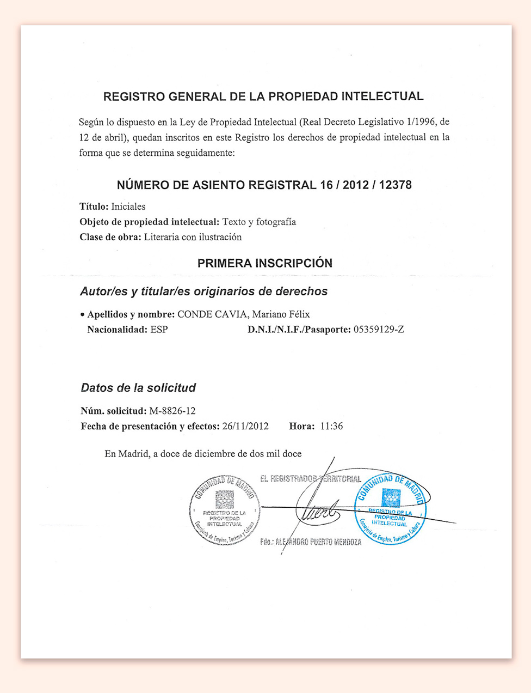
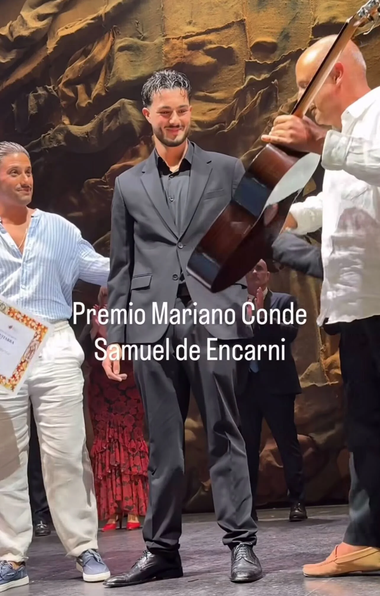

Inicio / Noticias
Lo que se dice
alrededor de una guitarra.
Estrenos, premios, artículos de prensa y todas las historias que explican por qué una guitarra de Mariano Conde es diferente.
05 / 08
Destacadas
La actualidad
de la casa.

115 años de una saga de guitarreros de Madrid
ExpoFlamenco ↗
Samuel del Río Carmona, primer Premio Mariano Conde
marianoconde.com ↗
El secreto de la guitarra «madrileña» de Ed Sheeran
ABC ↗
Cuatro generaciones de luthiers
El Confidencial ↗
Unas 60 guitarras al año y maderas secadas hasta 30 años
El Mundo ↗Archivo · 59 artículos
Historias sobre
el oficio.
Maderas, barnices, varetaje, sustain, mantenimiento y todo lo que hay detrás de una guitarra artesanal, publicado por el taller.
Amos Lora, un joven y virtuoso guitarrista en Telemadrid
marianoconde.com ↗↗Avance del documental sobre Mariano Conde
marianoconde.com ↗↗Cómo elegir el barnizado perfecto para tu guitarra clásica o flamenca
marianoconde.com ↗↗¿Cuál es la mejor madera para guitarra?
marianoconde.com ↗↗¿Cuáles son las mejores cuerdas para una guitarra flamenca?
marianoconde.com ↗↗¿Cuáles son las partes o piezas de una guitarra clásica?
marianoconde.com ↗↗Cuántas cuerdas tiene una guitarra española
marianoconde.com ↗↗Cutaway en una guitarra: ¿Qué es y qué implica?
marianoconde.com ↗↗Diapasón: El escenario clave de expresión en los instrumentos de cuerda
marianoconde.com ↗↗Diferencias entre guitarra flamenca y clásica
marianoconde.com ↗↗El Clavijero de las guitarras flamencas y clásicas: tradición, función y esencia del instrumento
marianoconde.com ↗↗El clavijero y las clavijas en la guitarra flamenca y clásica
marianoconde.com ↗↗El mango en la guitarra flamenca: el puente entre el cuerpo y el clavijero
marianoconde.com ↗↗El mástil de las guitarras flamencas: corazón y columna vertebral del instrumento
marianoconde.com ↗↗El puente en la guitarra flamenca: corazón del sonido
marianoconde.com ↗↗El sustain en guitarras clásicas y flamencas explicado
marianoconde.com ↗↗Entrevista a Mariano Conde por Iñigo Cifuentes
marianoconde.com ↗↗¡ESTRENO MUNDIAL! Mariano Conde «Los guitarreros que enamoraron al maestro Paco de Lucía»
marianoconde.com ↗↗Fondo de la guitarra flamenca: el arte invisible que da vida al sonido
marianoconde.com ↗↗Guitarras artesanales: tradición, arte y excelencia en Mariano Conde
marianoconde.com ↗↗Guitarras del Poema
marianoconde.com ↗↗Edición Doble Tapa
Guitarras del Poema →↗Edición Guitarras del Poema
Guitarras del Poema →↗Catálogo de guitarras
marianoconde.com ↗↗La boca de la guitarra: el portal de la voz
marianoconde.com ↗↗La cabeza o pala de la guitarra: esencia y función en la parte superior del mástil
marianoconde.com ↗↗La caja de resonancia (cuerpo) de las guitarras: el corazón sonoro del instrumento
marianoconde.com ↗↗La cejuela en la guitarra flamenca
marianoconde.com ↗↗La emoción de una guitarra con alma: Samuel del Río Carmona, primer ganador del premio “Mariano Conde” en el Festival Internacional del Cante de las Minas
marianoconde.com ↗↗La roseta de las guitarras artesanales
marianoconde.com ↗↗La silleta o hueso del puente: el corazón silencioso del alma guitarrera
marianoconde.com ↗↗La tapa armónica: el alma vibrante de la guitarra
marianoconde.com ↗↗Leonard Cohen & Mariano Conde
marianoconde.com ↗↗Los aros de la guitarra flamenca: tradición, materiales y sonido
marianoconde.com ↗↗Madera de abeto para guitarra clásica y flamenca. Lo que debes saber
marianoconde.com ↗↗Madera de arce para guitarra clásica y flamenca. Lo que debes saber.
marianoconde.com ↗↗Madera de caoba para guitarra clásica y flamenca. Lo que debes saber
marianoconde.com ↗↗Madera de cedro rojo canadiense para guitarra clásica y flamenca
marianoconde.com ↗↗Madera de ébano para guitarras clásicas y flamencas
marianoconde.com ↗↗Madera de Koa para guitarras clásicas y flamencas
marianoconde.com ↗↗Madera de Palo Santo de Brasil para guitarras clásicas y flamencas: Lo que debes saber
marianoconde.com ↗↗Madera de Palo santo de India para guitarras clásicas y flamencas
marianoconde.com ↗↗Madera de Palo Santo de Madagascar para guitarras clásicas y flamencas: lo que debes saber.
marianoconde.com ↗↗Mantenimiento de una guitarra Mariano Conde
marianoconde.com ↗↗Mariano Conde en El Confidencial
marianoconde.com ↗↗Por qué algunas guitarras “abren” con el tiempo
marianoconde.com ↗↗Primer Video del Taller de la Calle Amnistía, 1
marianoconde.com ↗↗Proceso de fabricación de una guitarra Mariano Conde
marianoconde.com ↗↗Qué es un sonido seco y por qué se busca en la flamenca
marianoconde.com ↗↗¿Qué hace que una guitarra sea “clásica de concierto”?
marianoconde.com ↗↗¿Qué hace que una guitarra sea “flamenca”?
marianoconde.com ↗↗¿Qué precio tiene una guitarra artesanal?
marianoconde.com ↗↗Quién inventó la guitarra: historia y nuestro legado
marianoconde.com ↗↗Razones por las que una guitarra se desafina
marianoconde.com ↗↗Trastes: la esencia metálica que define el diapasón de la guitarra clásica y flamenca
marianoconde.com ↗↗Varetaje de guitarra: el alma oculta que da vida a la clásica y flamenca
marianoconde.com ↗↗Vídeo reacción de Mariano’s Conde a las falacias de “solera flamenca”
marianoconde.com ↗↗Ed sheeran & Mariano Conde, periodico ABC
marianoconde.com ↗↗Leonard Cohen & Mariano Conde
marianoconde.com ↗↗Prensa y reconocimientos
Fuera del
taller.
Conciertos, premios y reconocimientos a una forma de entender la guitarra española.
Teatro Isabel la Católica
Concierto y encuentro en el marco del Festival de Cine Flamenco de Granada.
Premio Príncipe de Asturias de las Letras y las Artes
Reconocimiento a la guitarra española y a sus intérpretes.
Madrid
Presencia de las guitarras de la casa en la programación del festival.
Joaquín @culturas_indomitas, Gregorio Moya, José Viñas y Encarni
Reportajes y entrevistas sobre el oficio guitarrero de Mariano Conde.